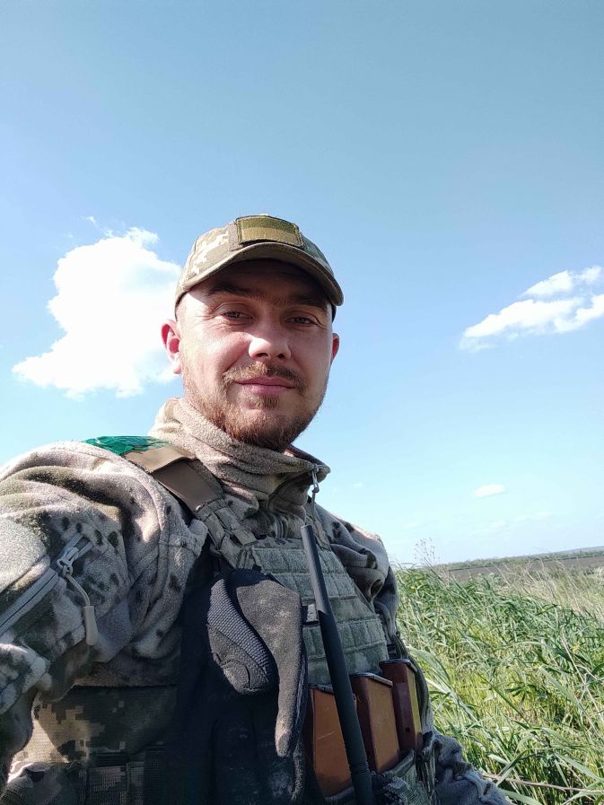

Мельник Данило Володимирович
Знайомство

Вітаю!
Мене звати Данило, і зараз я спробую трохи більше розповісти про себе...
Народився я в далекому 1985 році, у прекрасному місті Олександрія, що знаходиться в самісінькому центрі України, в сім'ї інженерів пострадянського простору. Потім життя завертіло-закрутило і я пішов у садочок...потім школа. Доречі, маю музичну освіту по класу духових інструментів (кларнет, саксофон). Юність в 90-ті роки була вкрай "весела", тому із розваг були тільки секції з боксу, карате та дзюдо.Але довільний відпочинок в ту пору не зрівняти з сучасною молоддю.(кажу вже як бабка на під'їзді...) Дівчата, річка, волейбол, футбол, баскетбол, чужі дачі з соковитими фруктами і це далеко не весь зміст того чарівного життя. Потім був інститут, Одеська Національна Академія Зв'язку ім. О.Попова, де найкраще, що зі мною сталося, це знайомство і одруження з моєю коханою.
Професійна діяльнвсть
Одразу після закінчення ВУЗу, я з дружиною, повернулися в моє рідне місто. І пішов я "заробляти гроші" на державне підприємство "Укрпошта". За п'ть років моєї співпраці з "Укрпошта" - так в мене цього і не вийшло... Потім мене покликали в корпорацію "Оболонь". І от нарешті, я зрозумів, як це коли працюєш з більш-менш пристойним обладнанням і за це тобі більш-менш пристойно платять. І через рік мого стажу на цьому чудовому підприємстві почалася війна...(2014рік) Далі криза в економіці, тиша в роботі нашого підприємства, обвал долара(допобачення більш-менш пристойна зарплатня), заробітки в Чехії. Доречі, закодоном так сподобалося як я збираю метало-пластикові вікна та двері, що навіть пропонували залишится на ПМЖ, але як бачите я з вами.(дружина не виявила бажання полишати нашу Батьківщину). Далі знов "Оболонь", а потім повномасштабне вторгнення...про війну писати не буду, немає там нічого героїчного і хорошого. Дослужився до лейтенанту, і звільнився з армії в 2024 році. І знову мене зустріла "Оболонь".
Особисті інтереси
Зазвичай люди пишуть, що полюбляють активний відпочинок, природу, прогулянки....так от, це не я. Після армії, просто ненавиджу природу(посадки, поля, і т.д.) За активний відпочинок сприймаю лежання на лежаку або покривальці на берегу річки. Мені краще піти в спрортзал і там провести дві години за підніманням важких предметів. Буває жінка виганяє мене на вечірнню прогулянку. Дуже люблю читати. Але зараз немаю часу на це, бо я як нормальна людина це робити не вмію. Якщо мені подобається сюжет книжки, то я ладен її читати до ранку аби тільки дізнатися чим все скінчиться....(фанатик). Цікавлюся футболом, але після останніх ігор збірної все меньше... Полюбляю машини...
А взагалі я "душа компанії". Взагалі не вживаю алкоголь і вмію веселитися і розважати інших (не знаю як в мене виходить).
Дякую, що прочитали цей невеликий опис мого життя і до зустрічі на уроках